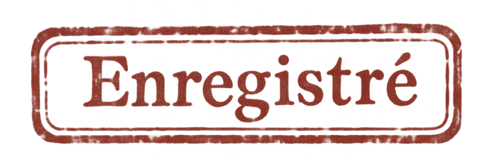

Affaires culturelles
Service de documentation
Référence : B.I. / SANS NUMÉRO
Diffusion : intérieure.
Le Bureau des Interstices
La Mission d’études et de liaison documentaire
(M.E.L.D.) est un service administratif
chargé de l’étude des phénomènes
insuffisamment documentés.
On l’appelle communément
le Bureau des Interstices.

« L'existence de ce service ne constitue pas une reconnaissance officielle des phénomènes dont il s'occupe. »
01 / Objet du service
Dans une France où l'on sait classer les personnes, les bâtiments et les formulaires, certains événements persistent à ne figurer dans aucune rubrique.
Un bruit entendu dans une pièce vide. Un témoignage parfaitement crédible auquel manque une explication. Un dossier dont l'administration assure qu'il n'a jamais existé — mais qu'il faut pourtant restituer avant jeudi. Une activité inexplicable qui vient modifier le cours ordinaire d'une existence.
Autant de faits qui peuvent conduire le Bureau des Interstices à ouvrir une enquête.
Ses agents observent, prennent des notes, croisent les témoignages, demandent des autorisations et boivent du café.
Les phénomènes, eux, n'ont pas reçu la circulaire.
ARCHIVE PHOTOGRAPHIQUE — P/001 — PARIS, ANNÉES 1960


Document audiovisuel n° 001 — Diffusion autorisée
ARCHIVE AUDIOVISUELLE — A/0046 — 1963
Archive audiovisuelle publiée par l'INA.
Consulter le document original ↗
BUREAU DES INTERSTICES
SERVICE DES ARCHIVES
NOTE MANUSCRITE
6 décembre 1963 — Allocution de M. Alain Peyrefitte, ministre de l'Information.
Le ministre annonce une amélioration de la diffusion des images sur le territoire national.
Cette initiative mérite d'être saluée.
Il serait toutefois souhaitable de vérifier que les images reçues correspondent bien à celles qui ont été émises.

La vidéo est une archive historique. La note de Charles Pinson appartient à l'univers fictionnel du Bureau des Interstices.
ARCHIVE PHOTOGRAPHIQUE — P/002 — TOULOUSE, 05.11.1966

02 / Répertoire général des archives
SERVICE CENTRAL DES ARCHIVES
Les documents sont répartis entre les services compétents.
Cette répartition raisonnée n'implique pas que les services concernés reconnaissent leur compétence.
Les personnes autorisées peuvent consulter les chemises disponibles dans l'ordre de leur choix.
Certains dossiers demeurent en cours de constitution. Leur absence ne saurait être interprétée comme la preuve de leur inexistence.

ARCHIVE PHOTOGRAPHIQUE — P/003 — TOULOUSE, 05.11.1966

03 / Extrait du registre du personnel
Le Bureau réunit huit collaborateurs, auxquels s'ajoutent les enquêteurs extérieurs et les concours ponctuels.
Le relevé ci-dessous décrit leurs fonctions dans le service. Il ne fixe ni leurs grades ni leurs statuts individuels.
SERVICE DU PERSONNEL
ÉTAT NOMINATIF — PARIS, 1965
DOCUMENT P-01 / EXTRAIT
- 01. Paul de Vauclerc DIRECTION
- 02. Suzanne Charrenson ASSISTANCE DU DIRECTEUR
- 03. Christian Boidy CONSEIL SCIENTIFIQUE
- 04. Charles Pinson ARCHIVES ET DOCUMENTATION
- 05. François Phạm ORGANISATION DES MISSIONS
- 06. Mireille Aubry STÉNODACTYLOGRAPHIE
- 07. Henri Martin ACCÈS ET SÉCURITÉ
- 08. Jean-Philippe Lafont ATTRIBUTIONS DIVERSES
DOCUMENT ÉTABLI POUR CONSULTATION INTERNE.
L'identité des personnes mentionnées
ne préjuge pas de leur présence effective
dans les locaux.
ARCHIVE PHOTOGRAPHIQUE — P/004 — SACLAY, JUIN 1966

04 / Dossiers de travail
Plusieurs chemises figurent au répertoire général avant l'achèvement de leur classement. Cette pratique est tolérée lorsque les circonstances ne permettent pas de faire autrement.
CHEMISE 04 — LES ENQUÊTEURS
Le Bureau fait appel à des collaborateurs extérieurs dont les compétences ne figurent pas toujours dans les nomenclatures habituelles. Leur registre est en cours de constitution. Les intéressés restent libres de poursuivre leurs activités en attendant.
CHEMISE 05 — LES AFFAIRES
Les dossiers d'enquête sont actuellement rapprochés de leurs pièces justificatives. Certaines pièces paraissent avoir été réunies avant l'ouverture des dossiers auxquels elles se rapportent.
CHEMISE 06 — LES ENQUÊTES
Les documents relatifs aux missions futures ne sont pas encore intégralement communicables. Le Narrateur peut en connaître certaines dispositions. Les autres personnes sont invitées à ne pas anticiper les conclusions de leurs enquêtes.
CHEMISE 07 — CONTEXTE
La documentation historique est en cours de rassemblement. Il est rappelé que les événements du passé ne deviennent pas fictifs du seul fait qu'ils figurent dans les archives du Bureau.
05 / Document joint
NOTE INTERNE — À NE PAS REPRODUIRE
Si un visiteur affirme avoir déjà consulté ce document, le prier de fournir une attestation du précédent visiteur.
Si les deux personnes sont identiques, transmettre le dossier à la direction.
Sans urgence apparente.
Document audiovisuel n° 002 — Pièce jointe
ARCHIVE AUDIOVISUELLE — B/0047 — 1963
Les Tontons flingueurs (1963) — Document audiovisuel externe.
Consulter la vidéo sur YouTube ↗
Extrait soumis aux droits de ses ayants droit.